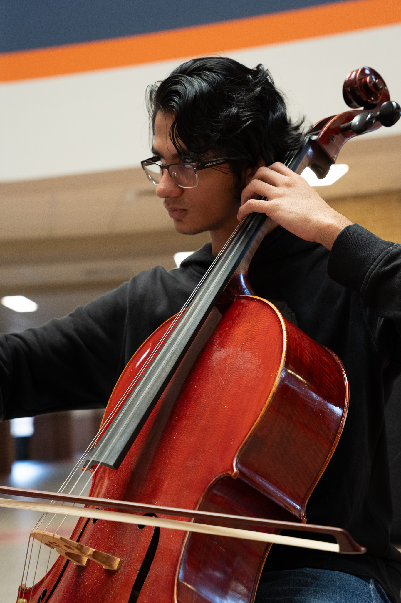

About
About Nikhil

Biography
Nikhil Murali (b. 2006) is an aspiring film and concert composer from Katy, Texas. He studied composition under David Michael Hyde and Dr. James Tabata. Nikhil’s music blends his experiences as a cellist, tabla player, and conductor to tell powerful stories both on the concert stage and through film. Praised for its narrative character, Nikhil’s music expertly blends evocative textures to take his audiences on unforgettable emotional journeys. His works have been regularly performed by the Seven Lakes High School Orchestras.
Outside of music, Nikhil studies Molecular and Cell Biology at Texas A&M University and serves as a research assistant in Dr. Tapasree Roy Sarkar’s lab. Upon graduation, he hopes to pursue a PhD in cancer biology.